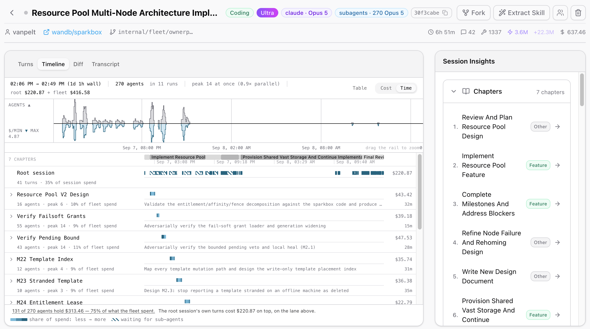
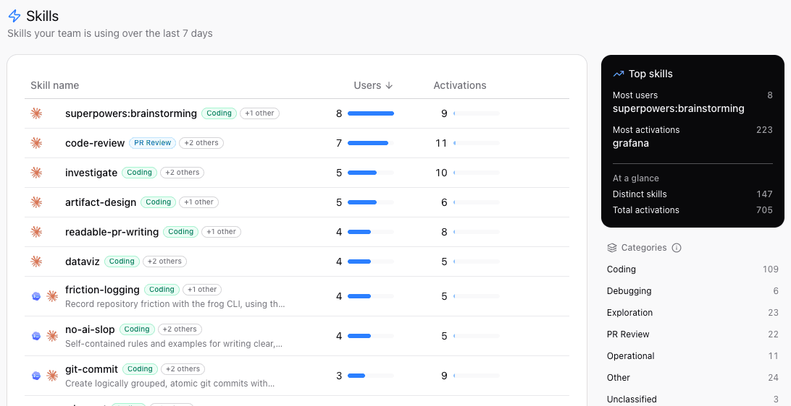
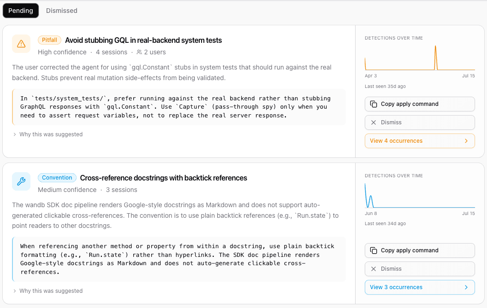

with a shared understanding of how teams build with AI.
Chris Van Pelt
co-founder · weights & biases · coreweave
expo hall · Fully Connected 26
the question
02 / 23
Are these massive Anthropic and OpenAI bills worth it?
The budget owners are getting nervous.
and nobody can answer it yet
HIVEMIND
the rule
03 / 23
You can't improve what you don't measure.
and we were measuring nothing
HIVEMIND
the problem
04 / 23
Agent work is dark matter
The data exists. It's just stranded.
claude code
~/.claude/projects
codex
~/.codex/sessions
cursor
…/Cursor/state.vscdb
gemini cli
~/.gemini/tmp
opencode
~/.local/share/opencode
// five tools · five formats · one per laptop · gone when the laptop is
what we built
05 / 23
HiveMindbuilt internally, for ourselves
Every agent. One shape.
ON EVERY LAPTOP
a small daemon
Finds sessions from every agent. Redacts secrets before anything leaves.
→
ONE BACKEND
one schema
Normalized into one event stream, so Claude Code and Codex read the same.
→
ONE VIEW
the whole team
Visibility follows GitHub: can read the repo, can read the sessions.
hivemind.wandb.tools
what we capture
06 / 23
The full trajectory
Four things worth keeping.
01
Transcripts
Every prompt and every reply.
02
Tool calls
Edits, shells, searches, failures.
03
Costs
Tokens and dollars by user, repo, model.
04
Outcomes
Did it become a merged PR?
// the fourth one is the one everybody forgets
by the numbers
07 / 23
9 months in.
711K
sessions captured
254
engineers
21M
tool calls
24K
sessions → merged PRs
// W&B engineers · through Sep 2026 · regenerate with analysis/hivemind_team_analysis.py
what the data says · harnesses
08 / 23
Harnesses
Nobody stays loyal.
Cursor: 60% → 19% of sessions.
Claude Code 22% → 39%, Codex 18% → 38%.
2 in 3 engineers used two or more harnesses in a month.
// share of interactive sessions per week · Jan → Sep 2026
what the data says · providers
09 / 23
Providers
The work follows the model.
OpenAI: 18% → 44% of sessions.
Anthropic: 67% → 46%.
Switching is cheap when the record is shared.
// share of all sessions (incl. subagents) by primary model's vendor
what the data says · delegation
10 / 23
Delegation
Subagents went mainstream.
22% → 84% of engineers ran a subagent (Jan → Aug).
Multi-agent workflows: 4 → 102 people in three months.
Typical engineer: 0.41 → 0.54 subagents per session in two months.
// share of monthly active engineers with ≥ 1 subagent session
what the data says · outcomes
11 / 23
Outcomes
Usage is lumpy. Shipping is steady.
31%
of interactive sessions end in a PR
3 in 4
of those PRs merge
55%
of spend comes from the top 10% of engineers
3×
spread in long-session habits, person to person
// PR links are a lower bound: sessions on main or on repos without the GitHub App never get one
zoom in · one engineer
12 / 23
Zoom in · my own export
One engineer. Nine months.
640
merged PRs, out of 714 opened
$53
per merged PR, at list price
1.07M
lines added by agents
1 in 6
sessions had a secret scrubbed on my laptop
// hivemind export · Jan → Sep 2026 · 6,768 sessions · regenerate with analysis/hivemind_me_analysis.py
zoom in · delegation
13 / 23
Delegation
My agents outnumber me.
September: 345 sessions from me, 1,648 from my agents.
4.8 subagents per session, up from 0.8 in May.
7 in 10 sessions, but only about 1 in 5 dollars.
// sessions per month · September is partial (through the 24th)
zoom in · parallel work
14 / 23
Parallel work
More agents, at the same time.
1.2 → 1.7 agents working at once (Jan → Aug).
27% of my working time has two or more going.
A session is open 69 min; the agent works 15.
// 5-minute windows with ≥ 1 tool call · subagents count toward the session that started them
zoom in · tools
15 / 23
Tool calls
The agent lives in the shell.
60% of 347K tool calls are shell commands.
The shell fails most: 3.7% vs 2.6% overall.
A good CLI pays twice: people and agents both use it.
// shell = Bash + Codex exec · Codex doesn't flag failed commands, so real failures are higher
section
16 / 23
WHAT IT UNLOCKS
Three payoffs.
troubleshoot
·
share
·
improve
payoff · 01 · troubleshoot
17 / 23
Payoff 01
Troubleshoot faster.

See how your subagents work.
Search every session on the team.
Fork a stuck session to another agent.
// story: the outage fork
payoff · 02 · share
18 / 23
Payoff 02
Share what works.

See which skills the team actually uses.
"How would a teammate do this?" is one click.
Your best workflow stops dying in your terminal.
// story: soul stealer
payoff · 03 · improve
19 / 23
Payoff 03
Keep improving.

Find what keeps going wrong, across people.
Turn it into a rule the agent follows.
Watch whether it stops happening.
// trajectory → insight → fix → fewer repeats
the big one · is it actually working?
20 / 23
We asked 49 W&B engineers, 198 times
"How long would this merged task have taken you without AI?"
2 hours
what they said
→
29 min
what the agent actually worked
5× faster on the typical task
95% beat the estimate
1,613 h said · 234 h worked
BY TASK SIZE≤ 1 h →11 min1–4 h →34 min4–8 h →87 min1–3 days →78 min3+ days →3.3 h
// in-product survey on merged PRs · Jul → Sep 2026 · medians · agent time = active time incl. subagents
so what does that add up to?
21 / 23
Back of the envelope
5×
faster per task (the survey)
×
1.7
agents working at once (me, slide 14)
≈
8.5×
on paper
THE CATCH
1.4×
End to end, tasks only close 1.4× faster than people's estimates.
The gap is us: reviewing, testing, approving. My agent works 15 of every 69 minutes a session is open.
COMING NEXT IN HIVEMINDReview that keeps up with your agents.
try it
22 / 23
Your team, your data
Learn for yourself.
HOSTED
Sign up in a minute.
Install the daemon, sign in with GitHub, and your sessions start flowing.
hivemind.wandb.tools
SELF-HOSTED
Run it on your own boxes.
One command brings up the whole stack. Your transcripts never leave your network.
curl -fsSL hivemind.wandb.tools/install | sh
hivemind serve up